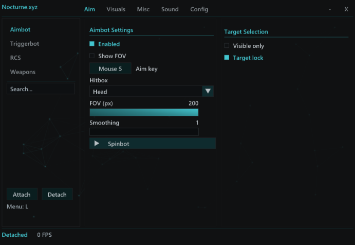

Aim controls
Choose your aim key, target hitbox, FOV and smoothing. Toggle target lock and visible-only targeting from the Aim tab.
Aim settings, customizable ESP and hit sounds.
Manage everything from one menu.

Choose your aim key, target hitbox, FOV and smoothing. Toggle target lock and visible-only targeting from the Aim tab.
Player boxes, health bars, names and weapon labels. Adjust colors, glow and text size from the Visuals tab.
Select hit and kill sounds with adjustable volume. Save your settings as profiles and load them from the menu.
Join our Discord for downloads and questions about Nocturne.
Join our Discord server for download access and setup information.
Yes. The image above is a screenshot of the Nocturne application. Click it to view the full-size image.
Press L while Nocturne is running.
Yes. Use the Config tab to save and load your configuration profiles.